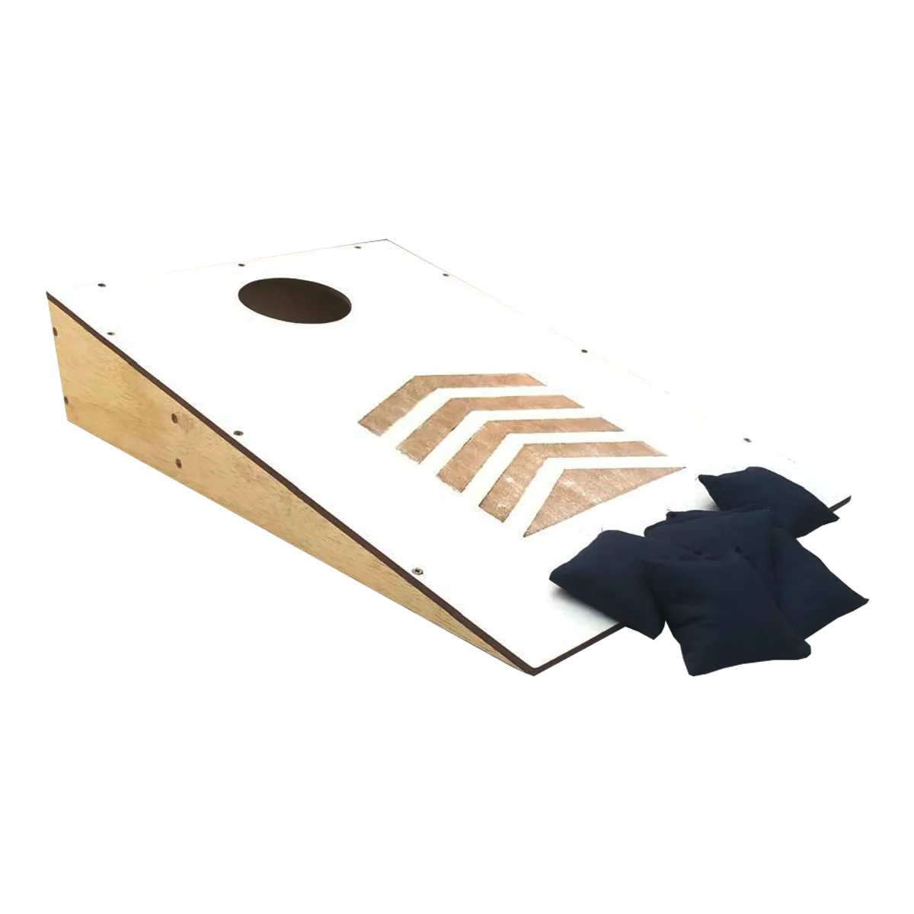
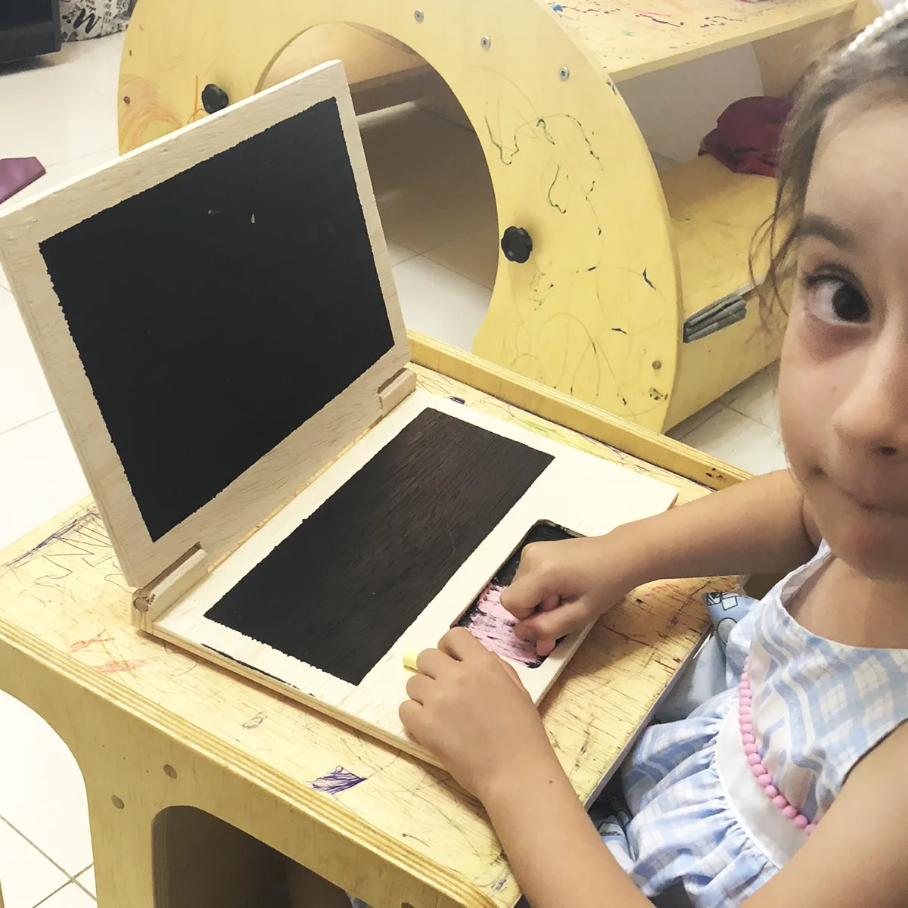

Brincar também é aprender
Na Trilha da Imaginação você encontra produtos pensados para estimular a criatividade, a interação e o brincar livre — elementos fundamentais para o desenvolvimento infantil.

Cornhole Infantil
Um jogo divertido que estimula coordenação motora, interação e momentos de brincadeira em família.
Falar sobre o Cornhole
Blocos Criativos
Peças de madeira que incentivam a construção livre, a imaginação e o desenvolvimento da criatividade.
Falar sobre os Blocos Criativos
Notebook de Madeira
Um brinquedo criativo que convida a criança a desenhar, imaginar e explorar novas ideias.
Falar sobre o Notebook de Madeira